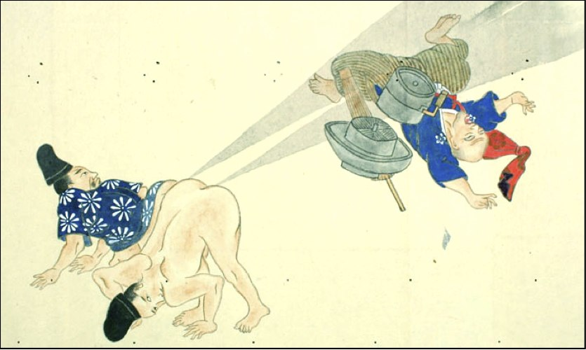

CMLIT 105 (GH;IL) The Development of Literary Humor (3) Literary humor expressed as satire, comedy, and farce--from ancient times to the present--in an international and multicultural context.
CMLIT 105 The Development of Literary Humor (3)
(GH;IL)
(BA) This course meets the Bachelor of Arts degree requirements.
CMLIT 105 is a broadly international course dealing with the nature of comedy and humor in literature. You will read samples from a broad spectrum of humor, including comedy, wit, satire, parody, irony, and farce. Through discussion and writing, you will also examine the techniques through which humor criticizes human nature, analyzes society, and expresses differing world views. The syllabus may be represented chronologically or divided into topics or literary forms that suggest various emphases, functions, and objects of literary humor. This course will provide opportunity to discuss both the widespread, or even universal, aspects of literary humor, and the diversity of literary humor across cultures and time periods. At the conclusion of this course, you should be able to understand and compare various literary forms and social, political, and cultural contexts that define humor and to assess the extent to which literary humor is or is not translatable across cultures or ethnic communities, or other groups. This course fulfills requirements for the Comparative Literature major, the World Literature minor, General Education Humanities, Bachelor of Arts Humanities, and General Education International/Intercultural Competency. Student performance in this course will be measured in a variety of ways, including some or all of the following (always including writing and discussion): -in-class and/or take-home essays/exams -literary diaries or reaction papers -in-class and/or online discussion/participation -individual and/or group in-class presentations/projects -research or topic papers
What was, is, and will be funny...: And other questions of universal humor
Basic Info...
INTRO:
814495//81448
111 Wartik
T R 11:15 AM - 12:30 PM
Professor:
Jonathan E. Abel
OFFICE:
441 Burrowes
OFFICE HOURS:
T, TH 9:00-11:00AM
or by appointment
TA:
Reva Baylets [email redacted]
Office Hours:
T,Th 12:45-2:45
Office:
433 Burrowes
The syllabus is in flux. Check here for most recent updates. Any printout is likely already out of date.
Updated Friday, September 28, 2012
Literary Humor
Fall
2012